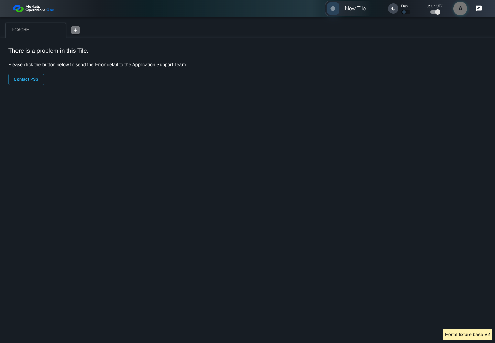

KNOW-048 real HTTP cache and controlled tenant lifecycle
PASS · application/run-050/know-048-real-http-cache-and-controlled-tenant-lifecycle-36bdbfeb7e3b-attempt-1 · ACTUAL_APPLICATION_LOCAL_SERVICES
Actual current React shell and real Chromium HTTP cache. Local HTTP fixture server supplies synthetic Alice, permissions, base entry wrapper, container, tile, trade, lazy content, CSS and images. V1/V2 markers identify controlled fixture assets. No browser routing, production CDN, real business tenant, or changed base binary acceptance.
2026-10-22T06:07:09.705Z to 2026-10-22T06:07:13.031Z
Assertions and result · Artifact manifest · Exact run inputs and source hashes
Result SHA-256:f09f81f3844ac37febebe97da485fc856759a73c753703882c33ace25d9461a2Machine observations
- cache-fixture-scope.json
49329249043c6340cd0b3cc65e32a3f738393691055a2a4538fad1b687ac2a61 - catalog-permission.json
e020dd6acb3770a0ab3d588606ab3aae74b035c19e18edee3ed412c82f801c78 - http-cache-observations.json
df1498dc75b9c65704c3c10a004deab3b9ce2a1ddf3176ffb473ea7445e375fb - versioned-trade-fixtures.json
4f33f4d85e208602152951e03cdbc4503c4dd82f4108ec3dad817217121b155c
Screenshot capture: CAPTURED. Named frames: 12.
Step screenshot evidence: COMPLETE. 11/11 canonical steps have execution screenshots.
Canonical step timeline
Given Alice uses an isolated browser profile with the synthetic identity and permissions defined for this case
Execution: PASSED.
1. step-01 Visible state after step 1: Given Alice uses an isolated browser profile with the synthetic identity and permissions defined for this case
2026-10-22T06:07:11.220Z · 1440×1000
Step: /Users/lushevol/code/github/ratan-release-impact/workbench/tasks/ui-test-coverage-20261022/test-cases.md:12141
SHA-256:e073a145e20d9367b1e52935b861d3caa20dc309ef8375a6848ae59cfbff4262And Alice has catalog permission for the synthetic tile with exact title "T-CACHE"
Execution: PASSED.
2. step-02 Visible state after step 2: And Alice has catalog permission for the synthetic tile with exact title "T-CACHE"
2026-10-22T06:07:11.317Z · 1440×1000
Step: /Users/lushevol/code/github/ratan-release-impact/workbench/tasks/ui-test-coverage-20261022/test-cases.md:12142
SHA-256:e073a145e20d9367b1e52935b861d3caa20dc309ef8375a6848ae59cfbff4262And The browser holds V1 tile data for trade "TR-1001"
Execution: PASSED.
3. step-03 Visible state after step 3: And The browser holds V1 tile data for trade "TR-1001"
2026-10-22T06:07:11.772Z · 1440×1000
Step: /Users/lushevol/code/github/ratan-release-impact/workbench/tasks/ui-test-coverage-20261022/test-cases.md:12143
SHA-256:c9068abec5542286d76bb1f9ab2201d46631a39536d27effdad28b5746e2c7fbAnd The controlled V2 entry request fails during refresh
Execution: PASSED.
4. step-04 Visible state after step 4: And The controlled V2 entry request fails during refresh
2026-10-22T06:07:11.820Z · 1440×1000
Step: /Users/lushevol/code/github/ratan-release-impact/workbench/tasks/ui-test-coverage-20261022/test-cases.md:12144
SHA-256:c9068abec5542286d76bb1f9ab2201d46631a39536d27effdad28b5746e2c7fbAnd The V2 fixture uses trade "TR-1002" with distinct field values
Execution: PASSED.
5. step-05 Visible state after step 5: And The V2 fixture uses trade "TR-1002" with distinct field values
2026-10-22T06:07:11.871Z · 1440×1000
Step: /Users/lushevol/code/github/ratan-release-impact/workbench/tasks/ui-test-coverage-20261022/test-cases.md:12145
SHA-256:c9068abec5542286d76bb1f9ab2201d46631a39536d27effdad28b5746e2c7fbWhen Alice reloads the browser page containing the portal
Execution: PASSED.6. step-06 Visible state after step 6: When Alice reloads the browser page containing the portal
2026-10-22T06:07:12.099Z · 1440×1000
Step: /Users/lushevol/code/github/ratan-release-impact/workbench/tasks/ui-test-coverage-20261022/test-cases.md:12146
SHA-256:fec84408d9335b2536406c24b95edf5f84f7b4b379b088b1f5b11bd75c1523d1And Alice clicks the text "New Tile" on the portal workspace page
Execution: PASSED.
7. step-07 Visible state after step 7: And Alice clicks the text "New Tile" on the portal workspace page
2026-10-22T06:07:12.234Z · 1440×1000
Step: /Users/lushevol/code/github/ratan-release-impact/workbench/tasks/ui-test-coverage-20261022/test-cases.md:12147
SHA-256:6ffc227d857a4ed1a48a14eba50cedaf62e75f3700d1d52cc9a318d2e79ad934Then the drawer panel headed by "Tile Options" is visible on the portal workspace page
Execution: PASSED.
8. step-08 Visible state after step 8: Then the drawer panel headed by "Tile Options" is visible on the portal workspace page
2026-10-22T06:07:12.315Z · 1440×1000
Step: /Users/lushevol/code/github/ratan-release-impact/workbench/tasks/ui-test-coverage-20261022/test-cases.md:12148
SHA-256:6ffc227d857a4ed1a48a14eba50cedaf62e75f3700d1d52cc9a318d2e79ad934When Alice clicks the text "T-CACHE" in the drawer panel headed by "Tile Options"
Execution: PASSED.9. step-09 Visible state after step 9: When Alice clicks the text "T-CACHE" in the drawer panel headed by "Tile Options"
2026-10-22T06:07:12.402Z · 1440×1000
Step: /Users/lushevol/code/github/ratan-release-impact/workbench/tasks/ui-test-coverage-20261022/test-cases.md:12149
SHA-256:af27fd91065bc43798d0fac09f9531e88a802bdf31a3b404b604dace1015438eThen No rendered trade combines V1 identifier "TR-1001" with V2 field values
Execution: PASSED.
10. step-10 Visible state after step 10: Then No rendered trade combines V1 identifier "TR-1001" with V2 field values
2026-10-22T06:07:12.747Z · 1440×1000
Step: /Users/lushevol/code/github/ratan-release-impact/workbench/tasks/ui-test-coverage-20261022/test-cases.md:12150
SHA-256:8e4f74bea813b17b5713adb34ce07d435e6541d00659cd4cd128584230cc92bfAnd The agreed load-failure state is visible when no consistent build can render
Execution: PASSED.
11. step-11 Visible state after step 11: And The agreed load-failure state is visible when no consistent build can render
2026-10-22T06:07:12.775Z · 1440×1000
Step: /Users/lushevol/code/github/ratan-release-impact/workbench/tasks/ui-test-coverage-20261022/test-cases.md:12151
SHA-256:8e4f74bea813b17b5713adb34ce07d435e6541d00659cd4cd128584230cc92bf
Additional named frames

The final visible state after the named test assertions.
2026-10-22T06:07:12.841Z · 1440×1000Step: Test source: /Users/lushevol/code/github/ratan-release-impact/workbench/e2e/audit-specs/cache-lifecycle.spec.ts:14
SHA-256:
8e4f74bea813b17b5713adb34ce07d435e6541d00659cd4cd128584230cc92bfScreenshots establish visible state only. Assertions and traces support functional claims.